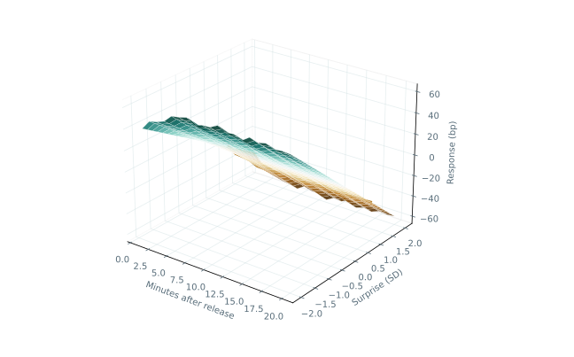
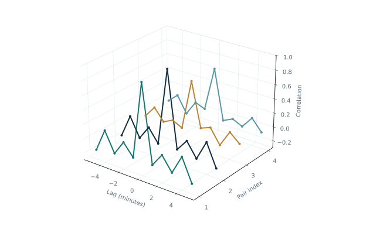

Information Diffusion Research
Explore how
markets respond.
Move from empirical associations to a controlled experiment. Each explorer pairs a rotatable 3D view with a readable two-dimensional companion.

Research resultsResponse surface
Explore fitted responses across horizons and rate surprises, with an uncertainty band for each selected slice.

Research resultsLead–lag relationships
Compare contemporaneous movement with lagged correlations across the provider quote series.
 Synthetic
SyntheticDiffusion laboratory
Change the adjustment rate and quote delay to see how measurement can resemble slow learning.
Drag to rotate, scroll to zoom and use the controls to compare scenarios. CSV exports accompany the empirical graphs.
Reading the graphs. A smooth surface visualises an estimated relationship; it does not establish a causal mechanism or a trading opportunity. The laboratory’s adjustment times belong to its chosen synthetic mechanism. No empirical diffusion time passed every reporting criterion.